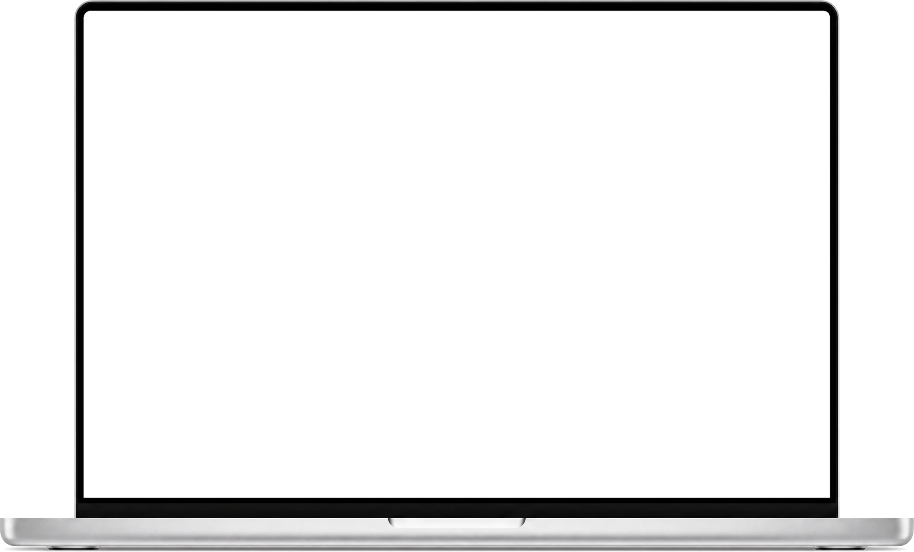

When do I use “for” or “since”?
“For” takes a length of time, like for three years. “Since” takes a starting point, like since 2023.
Follow lectures, videos and meetings with a live transcript on your Mac. Ask the floating assistant about what was said, using the AI provider you choose.

Five come with the app, each with instructions for one subject. Pick one before you start, or write your own.
When do I use “for” or “since”?
“For” takes a length of time, like for three years. “Since” takes a starting point, like since 2023.
Why is the derivative of x² equal to 2x?
By the power rule, the derivative of xn is n·xn−1, where n is the exponent. With n = 2, that gives 2x.
Why does this effect run twice in development?
React’s Strict Mode mounts each component twice in development to surface side effects. In production, the effect runs once.
What did we decide about the beta?
Decision: the beta goes to the first 50 users next Friday. Action item: Leo finishes the onboarding screens by Wednesday.
What does “product-led growth” mean?
The product itself brings in and keeps users, through free plans and sharing inside the app. Glossary: a growth loop is a cycle where using the product brings in new users.
Choose the assistant for the subject on the floating bar. Five come with the app, and you can write your own.
Click the microphone or press ⌘D. The microphone and computer audio start only then, and stop when you stop.
The transcript arrives as people talk, from Apple Speech on your Mac, a local Whisper server, or a cloud transcription service.
Type in the floating panel over any app and press ⌘↩. Sign in with ChatGPT, use an API key, or run a local model on your Mac.
Press ⌘E to attach a screenshot or selected text to a question, so the answer sees what you see.
Stop, and the session stays on your Mac with its transcript, answers and summary. Save the summary as a Markdown note, with decisions and next steps.
Lectures, YouTube, Zoom, Meet. Ask from any app.
1Open the DMG.
2Drag it to Applications.
3The first time, choose Open Anyway.
Yes. There is nothing to buy: you build LearnTranscriber from source on your Mac. Answers come from the AI provider you choose, so an API key is billed by that provider, while a local model runs on your Mac.
No. It hears your computer audio, so Zoom, Google Meet and Teams calls are transcribed without anyone joining.
Yes. Use Apple Speech or a local Whisper server for the transcript and a local model for the answers, and everything stays on your Mac.
The windows ask macOS for capture protection, but screen sharing in Zoom, Teams or Meet may still show them. Check what attendees see before you present.
Apple Silicon Macs with macOS 14 or newer. To build it you also need Node.js and Xcode with the macOS 26 SDK.
One app for every class and call, with an assistant for each subject, on your Mac.
LearnTranscriber costs nothing, and the whole app is open source. Read how it listens, what it stores and what it sends. Build it on your own Mac and change what you want.
It stands on open source too, from Electron and React to whisper.cpp and llama.cpp. The code goes on GitHub with the launch, under the MIT license.
github.com/DeVFirmino